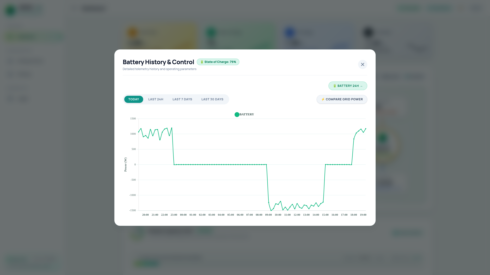
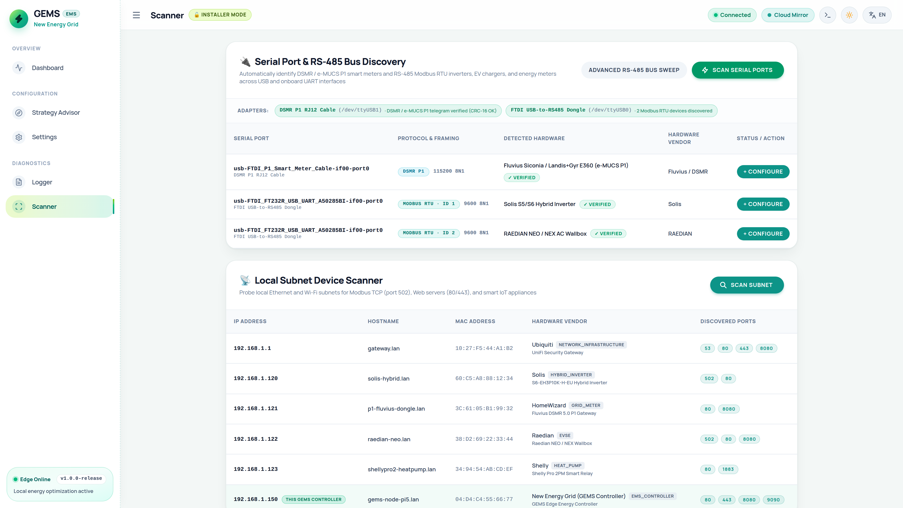
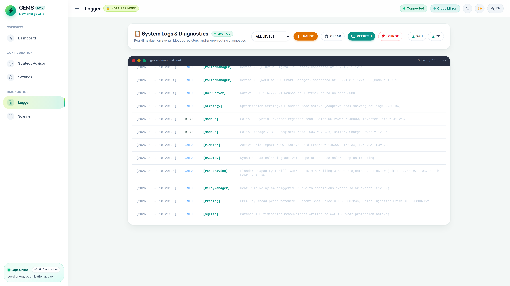

GEMS Gebruikers- & Configuratiehandleiding

- Deel I — De Interactieve Brochuretour
- 1. Welkom bij GEMS: Waarom Uw Woning een Energiebrein Verdient
- 2. 24 Uur uit het Leven van GEMS (Interactief Storyboard)
- Deel II — Stap-voor-Stap Configuratiewijzer
- 3. Stap-voor-Stap: De 4-Stappen Inbedrijfstellingswizard
- 4. Normale Bewonersmodus vs. Gecertificeerde Installateursmodus (Hangslot)
- Deel III — Dagelijks Dashboard & Slimme Bediening
- 5. Het Interactieve PowerFlow-dashboard, KPI's & Detailvensters
- 6. EV-laadmodi, Automatische 1F/3F-omschakeling & Split-Billing
- Deel IV — Volledige Instellingen-encyclopedie (Alle 8 Tabbladen)
- 7. Tabblad 1: Toestellen & EV-Laadcluster DLB
- 8. Tabblad 2: Strategie, Piekbewaking, GSC, Fluvius & Batterijregels
- 9. Tabblad 3: Energiecontract & De 5 Tariefwizards
- 10. Tabblad 4: Slimme Relais, Boilers & SG-Ready Warmtepompen
- 11. Tabblad 5: Bekabeld Ethernet-netwerk & 60s Terugvalbeveiliging
- 12. Tabblad 6: Systeeminformatie, Back-up, PIN, OTA & Lokale SSL
- 13. Tabblad 7: Meldingen, Webhooks, Wekelijkse E-mail & Debug
- 14. Tabblad 8: Optionele Cloudserver (GRID-EMS-SERVER)
- Deel V — Hulpmiddelen, Mobiele App & Spiekbriefje
- 15. Scanner, Live Systeemlogboek, PDF-energierapporten & Mobiele App
- 16. Veelgestelde Vragen (FAQ) & Snel Spiekbriefje
1. Welkom bij GEMS: Waarom Uw Woning een Energiebrein Verdient
Welkom bij GEMS (Grid Energy Management System) van New Energy Grid en The Charge Grid! Rechtstreeks gemonteerd in uw elektrische verdeelkast op een industriële Raspberry Pi 5 edge-computer met slijtagevrije NVMe SSD-opslag, vormt GEMS de autonome dirigent van uw volledige elektrische installatie.
In tegenstelling tot cloudgebonden kastjes die dienst weigeren bij internetuitval of maandelijkse abonnementskosten rekenen, voert GEMS alle metingen, Dynamic Load Balancing, batterijsturing en tariefformules 100% lokaal bij u thuis uit. Optioneel kunt u koppelen met GRID-EMS-SERVER (https://ems.newenergygrid.com) voor gratis toegang via uw smartphone en ondersteuning op afstand door uw installateur.
2. 24 Uur uit het Leven van GEMS (Interactief Storyboard)
Benieuwd wat GEMS allemaal achter de schermen doet terwijl u slaapt, werkt, kookt en ontspant? Volg een typisch etmaal van 24 uur in een woning uitgerust met een Solis S6 Hybride Omvormer + Batterij, een Raedian NEO Slimme EV-laadpaal, een digitale P1-meter en een SG-Ready warmtepomp:
2,50 kW.
2,8 kW, start GEMS uw Raedian-laadpaal op Enkelfasig (1F) zodat zelfs bescheiden ochtendzon direct in uw wagen vloeit. Stijgt het overschot boven 4,3 kW, dan schakelt GEMS na een veilige relaispauze van 20 seconden automatisch over naar Driefasig (3F)!
-€0,09/kWh. GEMS vult eerst de batterij (Trap 1), versnelt de EV-laadpaal naar maximaal vermogen (Trap 2), activeert het SG-Ready warmtepomprelais (Trap 3) en—zodra alle buffers vol zijn—regelt de Solis-omvormer terug (Trap 4) zodat u €0,00 aan terugleverboetes betaalt (met volledig behoud van Vlaamse GSC-subsidies!).
5,2 kW terwijl netstroom op het avondtarief duur is (€0,34/kWh). Binnen 1 seconde pauzeert GEMS het EV-laden en levert 3,2 kW bij vanuit uw thuisbatterij, zodat de netto netafname veilig onder uw maandpiekdoel van 2,50 kW blijft!
3. Stap-voor-Stap Configuratie: De 4-Stappen Inbedrijfstellingswizard
Wanneer u een gloednieuwe (of teruggezette) GEMS-controller opstart en http://ems.local (of het IP-adres) in uw browser opent, verwelkomt GEMS u met een interactieve Inbedrijfstellingswizard in 4 stappen. Doorloop deze 4 duidelijke stappen om uw systeem in minder dan 3 minuten gebruiksklaar te maken:
Verplicht Elektrisch Veiligheidsvoorschrift: Bevestig dat de fysieke overstroom- en differentieelbeveiliging voldoet aan het AREI (België) of NEN 1010 (Nederland) voordat u op Volgende → klikt.
Vlaams Capaciteitstarief Piekplafond (kW): Verschijnt automatisch wanneer Vlaanderen is gekozen (standaard 2,5 kW) als uw maandelijkse kwartierpiekdoel.
Klik op Opnieuw scannen. GEMS doorzoekt automatisch vaste Linux USB-paden (/dev/serial/by-id/*) voor USB P1-slimmemeterkabels (115200 8N1 / 9600 7E1) en RS-485 Modbus RTU-adapters, en scant gelijktijdig uw lokale /24 Ethernet-netwerk op Solis-omvormers, Raedian-laadpalen en Shelly-relais.
Beschikt u over een koppelingstoken (bijv. PAIR-XXXX-TCG) van https://ems.newenergygrid.com? Plak dit hier voor beveiligde toegang op afstand—of laat het veld leeg voor 100% lokaal gebruik. Klik op Inbedrijfstelling voltooien!
4. Normale Bewonersmodus vs. Gecertificeerde Installateursmodus (🔒 Hangslot)
GEMS is zo opgebouwd dat bewoners elke dag moeiteloos en zonder wachtwoord hun energie beheren, terwijl kritische elektrische limieten veilig vergrendeld blijven achter een discreet hangsloticoon rechtsboven op de pagina Instellingen.
| Functie / Handeling | 🏡 Normale Bewonersmodus (Standaard — Vergrendeld 🔒) | 🛠️ Gecertificeerde Installateursmodus (Ontgrendeld met PIN 🔓) |
|---|---|---|
| Aanmeldvereiste | Geen wachtwoorden! Opent direct op uw thuis-Wi-Fi of bekabelde netwerk. | Klik op het 🔒 Hangslot-badge in Instellingen en voer uw Installateurs-PIN (6+ tekens) in. |
| Dashboard & EV-laadmodi | Volledige toegang: Live PowerFlow, klikbare historiekvensters, EV-laadkeuze (Eco, PV Only, Fast, Off) en afdrukbare PDF-energierapporten. |
Volledige toegang + directe keuzeschakelaar voor de strategiemodus. |
| Zichtbare Instellingentabs | 2 Veilige Tabbladen: Toestellen (status + live </> Debug-diagnose & rapportverzending) en Systeeminformatie (IP/versie bekijken, Systeem herstarten en geverifieerde Software-update). |
Alle 8+ Tabbladen: Strategie, Energiecontract, Toestellen (toevoegen/bewerken/verwijderen + Vloot-DLB), Relais & Schakelaars, Netwerk, Systeeminformatie (Back-up/Herstel, PIN, SSL, Fabrieksinstellingen), Meldingen en Cloudserver (plus Opleveringstest). |
| Zijbalk-hulpmiddelen | Dashboard, Logboek (live systeemlogs & export) en Instellingen. |
Voegt Scanner (LAN/Modbus-detectie) en Cockpit Terminal (:9090) toe. |
5. Het Interactieve PowerFlow-dashboard, KPI's & Detailvensters
Uw centrale Dashboard ververst elke seconde via een directe WebSocket-verbinding. Centraal staat het geanimeerde PowerFlow-diagram, omringd door realtime financiële en energetische KPI-kaarten.
Elke Dashboard-cirkel & KPI-kaart Uitgelegd
| Knooppunt / KPI-kaart | Kleur / Voorbeeld | Betekenis & Wat Er Gebeurt Als U Erop Klikt |
|---|---|---|
| ☀️ Zonneknooppunt | ● Goud (4,8 kW) |
Actuele dakopbrengst en dagtotaal in kWh. Klik op de cirkel om de 24-uurs zonnecurve, het piekvermogen en eventuele terugregelhistorie te bekijken. |
| 🔋 Batterijknooppunt | ● Smaragdgroen (85% SoC) |
Actueel laad-/ontlaadvermogen (in W onder 1 kW, kW vanaf 1 kW), een aparte statusregel (Laden / Ontladen / Stand-by) en laadtoestand (SoC %) van uw Solis-thuisbatterij. Klik op de cirkel voor 24-uurs SoC-verloop, vermogensgrafieken en batterijtemperatuur/gezondheid. |
| ⚡ Netknooppunt | ● Zwart (-1,2 kW) |
Netto vermogen op uw digitale straataansluiting (Afname uit net vs. Injectie naar net). Klik op de cirkel voor fasespanningen (L1/L2/L3), afname-/injectiecurven, de Vlaamse kwartierpiekmeter en automatische P1 M-Bus Gas- (m³) & Waterhistoriek (m³ / L) wanneer gekoppeld. |
| 🏠 Woningverbruik | ● Smaragdgroen (950 W) |
Totaal vermogen dat momenteel door huishoudelijke toestellen wordt verbruikt (waarden onder 1 kW worden in W getoond, bv. 950 W). Klik op de cirkel om uw 24-uurs verbruiksprofiel te openen. |
| 🚗 EV-laadpaal | ● Blauw (7,4 kW) |
Actuele laadsnelheid, blauwe stroomlijn en modus van uw Raedian-laadpaal. Bij dubbele laadstations (zoals de Raedian Gemini) toont de kaart het gecombineerde totaalvermogen met onderaan een geïntegreerde #1 | #2 dubbele aansluitbalk met live statuspunt, vermogen en modus per aansluiting. Klik op de bovenkant voor alle aansluitingen of klik rechtstreeks op #1 / #2 om elke aansluiting afzonderlijk te schakelen (Eco, PV Only, Fast, Off) en sessie-kWh te bekijken. |
| 🔥 Relais / Warmtepomp | ● Oranje (AAN / UIT) |
Toont of uw slimme boiler of SG-Ready warmtepomp actief is. Klik op de cirkel voor draaiuren en handmatige schakelbediening. |
| 📊 Zelfverbruik vs. Zelfvoorziening | 78% / 92% |
Zelfverbruik: % van uw opgewekte zonnestroom dat u zelf in huis/batterij/wagen benut. Zelfvoorziening: % van uw totale stroombehoefte dat door eigen zon + batterij wordt gedekt. |
| 💶 Geschatte GRID-EMS Besparing | €4,82 / Dag | Gemeten eurobesparing over de gekozen periode (Dag, Maand, Jaar), uitgesplitst in Zon-zelfverbruik, Batterij & Tariefsturing, Slim EV-laden & Terugregeling en (enkel in Vlaanderen) Capaciteitspiek-besparing. |
| 🛡️ Maandpiek (Enkel Vlaanderen) | 2,50 kW |
Hoogste geregistreerde 15-minuten kwartierpiek in de lopende kalendermaand (reset op de 1e van elke maand om 00:00). Strikt beperkt tot Vlaamse (BE + flanders) installaties—automatisch verborgen en uitgeschakeld in Nederland en andere landen. |
| ⚠️ Telemetrie- & Veiligheidsbewaking | ● VEROUDERD / OFFLINE | Zodra meetwaarden verouderen of een meter/omvormer offline raakt, toont GEMS een live waarschuwingsbanner, sluit offline toestellen uit van de totaalcijfers en handhaaft veilige hoofdzekeringlimieten voor 1×230V, 3×230V Delta en 3×400V+N. |


6. EV-laadmodi, Automatische 1F/3F-omschakeling & Split-Billing
Of u nu op de EV-laadpaalcirkel op het Dashboard tikt of uw Raedian-laadpaal in Instellingen configureert: GEMS biedt vier slimme laadmodi én automatische enkelfasige/driefasige zonne-aanpassing:
Normaal heeft een driefasige laadpaal minimaal 3 × 6A = 4,14 kW aan zonne-overschot nodig voordat het laden kan starten—waardoor kleinere ochtend- en avondzon verloren gaat! Wanneer u Automatische 1F/3F Zonne-omschakeling activeert op een geschikte laadpaal (zoals de Raedian NEO), start GEMS al vanaf 1,4 kW zonne-overschot op 1-Fase (1,4 kW tot 3,6 kW). Blijft het zonne-overschot stabiel boven 4,2 kW, dan pauzeert GEMS kortstondig, wacht een verplichte 20-seconden anti-vastlaspauze zodat de boordladerrelais van de auto volledig stroomloos openen, schakelt de contactor over naar 3-Fasen (4,1 kW tot 22 kW) en hervat het laden naadloos!
7. Instellingentabblad 1: Toestellen & EV-Laadcluster DLB
Ga naar Instellingen → Toestellen. In de Normale Bewonersmodus bekijkt u de live verbindingsstatus en start u een </> Debug-diagnose. Door de Gecertificeerde Installateursmodus (🔓) te ontgrendelen verschijnen automatische hardwaredetectie, het toevoegen/bewerken uit 170+ geverifieerde templates (met als primaire referenties Solis en Raedian) en de module EV-Laadcluster & DLB.

Stap-voor-Stap: Een Toestel Toevoegen of Bewerken (Elk Veld Uitgelegd)
Klik op 🔍 Seriële toestellen detecteren (om automatisch USB P1-meters en RS-485-adapters te vinden), of klik op + Nieuw energietoestel toevoegen onder Omvormers & Zon, Slimme Meters, Batterijen & Opslag, EV-laadpalen of Slimme Relais:
Specifieke EV-laadpaalvelden & Optionele EV-Laadcluster DLB-module
Bij het configureren van een EV-laadpaal (of wanneer u onderaan het tabblad Toestellen de module EV-Laadcluster & DLB activeert voor parkings tot 64 laadpunten) zijn deze gespecialiseerde instellingen beschikbaar:
| EV- / Vlootinstelling | Opties / Standaard | Wat Het Doet & Wanneer Gebruiken |
|---|---|---|
| Laadpuntnummer & Vlootprioriteit | Laadpunt 1–64VIP, Hoog, Normaal, Laag, Enkel Zon |
Wijst een parkeervaknummer en laadprioriteit toe (VIP > Hoog > Normaal > Laag > Enkel Zon): VIP voor directie/bezoekers, Hoog, Normaal, Laag (maakt bij krapte plaats voor Normale laadpunten maar behoudt toegang tot netstroom) of Enkel Zon (pauzeert zonder zonne-overschot). |
| Automatische 1F/3F Zonne-omschakeling | Selectievakje (Uit / Aan) |
Schakelt dynamisch tussen 1-Fase (1,4–3,6 kW) en 3-Fasen (4,1–22 kW) op geschikte laadpalen (zoals Raedian) met ingebouwde contactor-veiligheidspauze van 20 seconden. |
| Vloot-DLB Actief & Zero-Touch Auto Onboard | Schakelaars in Clusterkaart | Activeert Dynamic Load Balancing over 32 tot 64 laadpalen. Met Zero-Touch Auto Onboard wordt elke nieuwe OCPP-laadpaal gericht op ws://ems.local/ocpp/{id} automatisch toegevoegd bij de eerste BootNotification! |
| Cluster Max. Stroom (A) & DLB-verdeling | bijv. 63 A / 80 Apriority_queue, equal_share, solar_first |
Begrenst de gezamenlijke stroom van de hele laadgroep. Kies Priority Queue (geordend volgens VIP/Hoog/Normaal/Laag/Enkel Zon), Equal Share (gelijke ampères per auto) of Solar First (zonne-overschot eerst verdelen). |
| Straight-Through OCPP Smart Forwarder (Proxy) | Upstream CPO URL + Auth Header |
Laat GEMS lokaal de laadstroom begrenzen via OCPP terwijl alle RFID-laadpassen en transacties (StartTransaction, MeterValues, StopTransaction) transparant worden doorgestuurd naar een extern CPO-facturatieplatform of werkgeversvergoedingsdienst! Gebruik {chargePointId} in de URL. |
| Inkomende OCPP 1.6-J Laadpaalauthenticatie | Gebruikersnaam & Wachtwoord |
Optionele HTTP Basic Authentication-inloggegevens voor laadpalen die verbinden met de lokale GEMS OCPP WebSocket-server. |
8. Instellingentabblad 2: Strategie, Piekbewaking, GSC, Fluvius & Batterijregels
Instellingen → Strategie vormt het analytische brein van GEMS, overzichtelijk ingedeeld in 8 logische kaarten. Hieronder vindt u elk veld in heldere taal uitgelegd, zodat u precies weet wat het doet en hoe u het optimaal afstemt:

8.1 Geografische Locatie & Limieten van de Netaansluiting
8.2 Optimalisatiestrategie, Vlaamse Piekbewaking & GSC-subsidiebescherming
3×25A hoofdzekeringen tegen dure 3×35A vastrechtverzwaring (€1.000+/jr), vermijdt terugleverkosten via lokale PV-opslag/EV-laden, regelt terug bij negatieve EPEX NL-uren en schakelt Vlaamse Capaciteitstarief- / GSC- / Elia-regels volledig uit.
8.3 Belgische DNB Telecontrole (Fluvius / ORES / RESA — IEC 60870-5-104)
Uitsluitend vereist voor grotere zakelijke of decentrale productie-installaties waar de Belgische netbeheerder (Fluvius, ORES of RESA) een fysieke Telecontrole-RTU in de elektriciteitskast plaatst:
| IEC 60870-5-104-instelling | Standaardwaarde | Wat Het Doet & Wanneer Gebruiken |
|---|---|---|
| Ingeschakeld, TCP-poort, ASDU & IOA-mapping | Uit • Poort 2404 • ASDU 1 |
Start de lokale IEC 60870-5-104 slave-server op poort 2404 met instelbare 24-bits IOA-adressen (5001–5003 & 1001–1003). Laat op Uit staan bij gewone woningen; schakel enkel in wanneer een DNB RTU-kast aanwezig is. |
| Toegestaan RTU-IP / CIDR & Eenheid Setpoint | 192.168.1.0/24 • kW/kVAr of % |
Beperkt welk RTU IP-adres commando's mag sturen en kiest of actieve (P) en reactieve (Q) setpoints (ASDU 48–50 / 61–63) in absolute kW / kVAr of percentage van het nominale vermogen (percent) worden geïnterpreteerd. |
| Testknoppen voor Opleveringskeuring | Noodstop, 4.0 kW, +2.0 kVAr, Vrijgave |
Laat de installateur en DNB-keurder ter plaatse ASDU 45/58 (Noodafschakeling), proportionele multi-omvormer P-curtailment en reactieve Q-sturing simuleren tijdens de indienststellingskeuring. |
| Externe Aggregator / VPP-enveloppe (BRP/BSP) | Uit • 10 kW • Reserve 20% |
Optionele beveiligde interface waarmee erkende externe BRP/BSP-aggregatoren tijdsgebonden (15–900s lease) batterij-setpoints kunnen sturen terwijl GEMS uw hoofdzekering, reserve-SoC, EV-vertrekplanning en Vlaamse kwartierpiek strikt beschermt. |
8.4 Batterij Netladen, Arbitrage & Regelgebaseerde Kostenoptimalisatie

8.5 Slimme EV-laadoptimalisatie, Elia Groene Stroom Sync & Super-Dal Basislast
9. Instellingentabblad 3: Energiecontract & De 5 Tariefwizards
Instellingen → Energiecontract rekent ruwe groothandelsprijzen om naar uw exacte all-in consumentenprijs per kWh (inclusief leveranciersopslag, onbalanskosten, nettarieven, energiebelasting/accijnzen en BTW).


Stap-voor-Stap: De Juiste Contractwizard Kiezen (Alle 5 Uitgelegd)
| Contractwizard | Voor Wie Bedoeld | Elk Veld in Deze Wizard Uitgelegd |
|---|---|---|
| 1. Vaste / Variabele Tarieven | Gezinnen met een klassiek enkel- of tweevoudig uurtarief (Piek / Dal) en vaste terugleververgoeding. |
• Piektarief (€/kWh): Dagtarief elektriciteit (weekdagen 07:00–22:00). • Daltarief (€/kWh): Nacht- & weekendtarief (22:00–07:00 + weekends). • Terugleververgoeding (€/kWh): Vaste vergoeding per geïnjecteerde kWh zonnestroom. • Post-2027 Terugleverregels (Enkel Nederland): Optionele terugleverkosten per kWh, optioneel Jaarplafond Teruglevering (Terugleverstaffel, kWh/jr) dat automatisch overschakelt naar strikte 0 W Nul-Teruglevering zodra uw jaargrens is bereikt, en live controle op de wettelijke 2027–2029 minimumvergoeding (≥ 50% van het kale leveringstarief).
|
| 2. Geavanceerd Dynamisch (Visuele Formulebouwer) | Maatwerk dynamische contracten of gevorderde gebruikers die een eigen formule willen samenstellen. |
• Marktprijsbron: Koppelt aan live Day-Ahead EPEX Spot (€/MWh of €ct/kWh).• Interactieve Drag & Drop Formulebouwer: Klik of sleep bouwstenen ( EPEX_EUR_KWH, +, *, 0.105) om uw exacte afname- en injectieformules op te bouwen, inclusief optionele Tijdafhankelijke Regels.
|
| 3. Dynamic-BE (Belgische Uurlijkse EPEX) | Belgische particulieren of bedrijven met een dynamisch uurtariefcontract. |
• Klantsegment: Particulier (6% BTW) of Zakelijk (21% BTW).• Belgische Leverancierspreset & Afsluitdatum: Vult automatisch geverifieerde Belgische formules in: – consumption_multiplier & consumption_adder (toegepast op EPEX * 0.001 * mult + adder)– injection_multiplier & injection_adder (inclusief negatieve terugleverkosten)– Jaarlijkse Vaste Vergoeding (€/jr).
|
| 4. Flex-BE (Tijdsblokken + Maandelijkse EPEX) | Belgische flex-/variabele contracten met Piek-, Dal- en Super-Dal (01:00–07:00) schijven. |
• Piek / Dal / Super-Dal Opslag (€/kWh): Leverancierstarief per tijdvenster. • Injectie-multiplier & Opslag: Berekening van de terugleververgoeding. • Batterij Automatisch Laden in Super-Dal Venster (01:00–07:00): Directe 1-klik schakelaar + Doel-SoC (%) om de batterij 's nachts tegen Super-Dal tarief te vullen. |
| 5. Dynamic-NL (Nederlandse 15m / 60m EPEX) | Nederlandse huishoudens met een dynamisch kwartier- of uurtariefcontract in Nederland. |
• Spot-afrekenschaal: Keuze tussen 15-Minuten Kwartierprijs (15m) en Uurgemiddelde (60m).• Nederlandse Leverancierspresets: Bevat o.a. Vattenfall Nederland — FlexPrijs ( 1,00× EPEX NL + €0,0211/kWh opslag, €95,40/jr Vastrecht, Energiebelasting excl. btw voor 2026 0,09161 €/kWh & 2027 0,08802 €/kWh, 21% BTW, 1,00× teruglevering), Eneco Dynamisch en Frank Energie Dynamisch:– Inkoopvergoeding Afname / Teruglevering (€/kWh)– Energiebelasting (€/kWh, excl. 21% BTW) (presets voor 2026 0,09161 en 2027 0,08802 €/kWh)– Terugleverkosten (€/kWh) & Vastrecht (€/jr).
|
Regionale Netbeheerderspresets, Waalse Tarif Impact & Live 24-uurs Tariefvisualisatie
Tarif Impact Fluvius / ORES / RESA / NL10. Instellingentabblad 4: Slimme Relais, Boilers & SG-Ready Warmtepompen
Instellingen → Relais & Schakelaars zet overtollige zonnestroom en negatieve spotprijzen om in gratis warm water en ruimteverwarming door slimme contactoren aan te sturen (Shelly Pro/Plus, Modbus TCP/RTU-relais en SG-Ready warmtepompen).


Elke Instelling van een Relais-automatiseringsregel Uitgelegd
SG-Ready Warmtepomp 2-Relais Schakelmatrix
| SG-Ready Stand | Relais 1 : Relais 2 | Gedrag van de Warmtepomp & Wanneer GEMS Deze Activeert |
|---|---|---|
| Stand 1 — Netblokkering | 1 : 0 |
Blokkeert tijdelijk de compressor tijdens extreme capaciteitspieken (indien geconfigureerd). |
| Stand 2 — Normaal Eco-bedrijf | 0 : 0 |
Standaard thermostaatwerking (normale dagelijkse stand). |
| Stand 3 — Zonne-boost Aanbeveling | 0 : 1 |
Verhoogt de streeftemperatuur van tapwater en buffertank bij matig zonne-overschot (bijv. > 1.200 W) of goedkope nachtelijke spotprijzen. |
| Stand 4 — Geforceerde Maximale Thermische Opslag | 1 : 1 |
Geeft direct maximale thermische opwarming vrij bij groot zonne-overschot (> 2.500 W) of negatieve stroomprijzen. |
temperature_2m)
Onder Instellingen → Strategie schakelt u Weersafhankelijk SG-Ready Thermisch Voorverwarmen in (met instelbare Koudegolf-drempel tussen -15°C en +15°C, standaard 2,0°C). GEMS activeert automatisch SG-Ready Stand 3 bij zonne-overschot of goedkope dynamische spotprijzen voorafgaand aan een voorspelde 12-uurs Open-Meteo buitentemperatuurdaling—met strikt behoud van hoofdzekering- en Vlaamse capaciteitspieklimieten.
11. Instellingentabblad 5: Bekabeld Ethernet-netwerk & 60s Terugvalbeveiliging
Instellingen → Netwerk (zichtbaar in de Gecertificeerde Installateursmodus) beheert de primaire bekabelde Ethernet-aansluiting (eth0) van uw Raspberry Pi. Voor maximale bedrijfszekerheid in metalen verdeelkasten zijn draadloze Wi-Fi-interfaces bewust weggelaten ten gunste van vaste netwerkbekabeling.

12. Instellingentabblad 6: Systeeminformatie, Back-up, PIN, OTA & SSL
Instellingen → Systeeminformatie biedt inzicht in systeemidentiteit, veilig herstarten, cryptografisch ondertekende software-updates, draagbare JSON-configuratieback-ups, PIN-wijziging en lokale HTTPS-certificaten:

13. Instellingentabblad 7: Meldingen, Webhooks, Wekelijkse E-mail & Debug
Instellingen → Meldingen houdt u proactief op de hoogte via realtime webhook-waarschuwingen, wekelijkse samenvattende e-mailrapporten op zondagavond en instelbaar diagnostisch logniveau:

14. Instellingentabblad 8: Optionele Cloudserver (GRID-EMS-SERVER)
Instellingen → Cloudserver beheert uw optionele versleutelde koppeling met GRID-EMS-SERVER (https://ems.newenergygrid.com) voor weergave overal ter wereld en ondersteuning op afstand door uw installateur.

15. Netwerkscanner, Live Logboek, PDF-energierapporten & Mobiele App


Verbind uw smartphone met uw thuis-Wi-Fi en open http://ems.local in Safari (iPhone) of Chrome (Android). Tik op Delen → Zet op beginscherm (Add to Home Screen). GEMS opent voortaan als een razendsnelle app op volledig scherm met handige navigatiebalk onderaan!
16. Veelgestelde Vragen (FAQ) & Snel Spiekbriefje voor Instellingen
| Doel / Scenario | Waar in GEMS | Exacte Instelling om Aan te Passen |
|---|---|---|
| Mijn elektrische auto uitsluitend met 100% gratis zonnestroom laden | Dashboard → Klik op EV-laadpaalcirkel | Kies de modus PV Only (of Eco met Goedkoopste Spotprijs-uren = 0). Schakel ook Automatische 1F/3F Fase-omschakeling in bij uw Raedian-laadpaal! |
| Mijn Vlaamse maandpiek op het minimum van 2,50 kW houden | Instellingen → Strategie | Zet Optimalisatiemodus = Vlaanderen (Piekbewaking), Capaciteitspiek-limiet = 2,50 kW en Peak Shaving Buffer = 150 W. |
| Geen terugleverboetes meer betalen bij negatieve middagprijzen | Instellingen → Strategie & Toestellen | Vink Allow Curtailment aan bij uw Solis-omvormer onder Toestellen en schakel Actieve Omvormer-terugregeling in onder Strategie met Basisdrempel = 0,00 €/kWh. |
| Mijn Vlaamse Groenestroomcertificaten (GSC) beschermen bij negatieve prijzen | Instellingen → Strategie | Selecteer uw GSC-preset (bijv. €250 of €350/MWh). GEMS regelt pas terug wanneer de negatieve spotprijs dieper zakt dan uw subsidiewaarde! |
| Mijn thuisbatterij 's nachts voorladen vóór een bewolkte winterdag | Instellingen → Strategie | Kies onder Batterij Netladen voor Dynamisch + Zonneprognose en stel uw Netlaadplafond (€/kWh) in (bijv. 0,10 €/kWh) of voeg een Aangepast Laadvenster toe. |
| Mijn warmwaterboiler of SG-Ready warmtepomp opwarmen met zonne-overschot | Instellingen → Relais & Schakelaars | Voeg een regel toe met Voorwaarde = solar_export_exceeds (bijv. 1500 W) en Min. Inschakeltijd = 900 sec, of koppel twee relais tot een 4-Standen SG-Ready Warmtepomp. |
| +20 kWh in mijn wagen laden tegen 07:00 zonder voertuig-API's | Dashboard → EV-laadpaal (of Instellingen → Toestellen) | Stel Sessiedoel (+kWh) en Vertrektijd (UU:MM) in op uw Raedian-laadpaal. GEMS meet de geladen kWh op de laadpaalmeter en kiest automatisch zon + de goedkoopste piekveilige kwartieren. |
| Batterijruimte vrijhouden voor negatieve middagprijzen | Dashboard → Batterij 24u Prognose | Automatisch actief bij Dynamische 24u-prognose: GEMS houdt 's ochtends batterijruimte vrij (solar_hold) bij rendabele injectie zodat uw Solis-batterij 's middags negatieve zonnestroom opvangt vóór terugregeling nodig is. |
| Alleen-lezen telemetrie delen via lokale MQTT of LAN Modbus TCP | Instellingen → Netwerk | Schakel uitgaande MQTT v3.1.1 (met 1-klik Home Assistant Auto-Discovery) of de LAN-only Alleen-lezen Modbus TCP-server (poort 1502, enkel FC03/FC04) in. |